UKM Sarpsborg 2026
Markedsføringsstrategi
Reels
Plakater
Foto & video
Oppdraget
UKM (Ung Kultur Møtes) er en landsdekkende kulturfestival og møteplass for alle mellom 13 og 20 år. Etter pandemien har deltakelsen i Sarpsborg vært lav, men i år ville vi snu dette og få UKM opp igjen. Det var målet. Vi ville samle alle de kreative og engasjerte ungdommene som finnes i Sarpsborg. I et team av 2 som jobber med UKM Sarpsborg året rundt, fikk jeg ansvar for markedsføringen av Sarpsborgs lokalmønstring i 2026. Jeg tok også bilder og videoer under arrangementet.
Min løsning
Mange ungdommer i dag vet ikke en gang hva UKM er. Vi måtte derfor
begynne litt “på scratch”. Jeg startet med å idémyldre og gjøre litt
research. Jeg så på andre kommuner for å se hva som virker å
fungere, og hva som ikke fungerer. Noen kommuner har allerede store
miljøer med kulturinteresserte ungdommer, andre har ikke det.
Sarpsborg er en av de.
UKM lanserte ny visuell profil i desember, som jeg brukte aktivt i
markedsføringen til dette arrangementet. Ved å følge profilen gjør
det at UKM vil være gjenkjennbart hos ungdommene når de ser noe UKM
relatert. Profilen er utviklet med målgruppen i tankene, og jeg
hadde også målgruppen i tankene under hele prosessen, for å øke
sjansen for at det jeg lagde ville treffe dem.
For å nå ungdommene, møtte vi de der de er. Jeg lagde plakater som
vi hengte opp på kulturskoler, fritidsklubber og skoler. Sosiale
medier ble også en naturlig og stor del av markedsføringen, da mange
ungdommer er aktive der. Blant annet kontaktet jeg noen av
ungdommene som skulle delta på arrangementet og lagde korte
SoMe-videoer der jeg intervjuet dem og viste frem det de skulle
delta med. Her valgte jeg strategisk litt ulike ungdommer, for å
dekke flere interesser og bakgrunner. Tanken bak disse videoene var
å tiltrekke ungdommer med like interesser, eller voksne som kjenner
aktuelle ungdommer. I tillegg til å gi ungdommene en plattform til å
vise seg frem - som UKM skal være.
Resultatet
UKM Sarpsborg 2026 ble en helt rå dag med både show på scene og
kunstutstilling. I år hadde vi rundt 30 deltakere, sammenlignet med
5 i fjor, og enda færre året før. Deltakerne var gitarister,
sangere, arrangører, konferansierer, kunstnere og band. I tillegg
var det mye liv i lokalene, med familie, venner og andre som kom for
å se på, støtte ungdommene, og oppleve UKM. Gjennomføringen ble
derfor mye bedre enn vi kunne sett for oss.
Filmene i sosiale medier fikk en del oppmerksomhet, og
synliggjøringen på andre fritidsarenaer og kulturskoler i Sarpsborg
bidro til å gjøre at flere ungdommer oppdaget UKM og deltok.
Foto
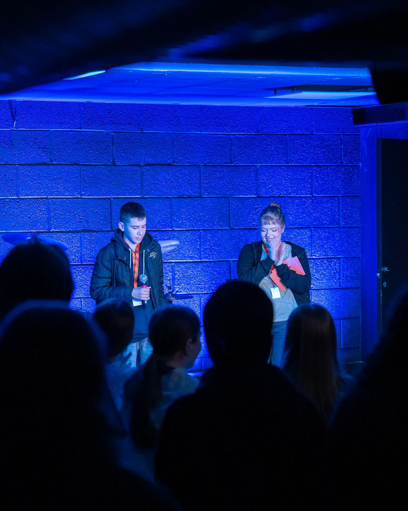
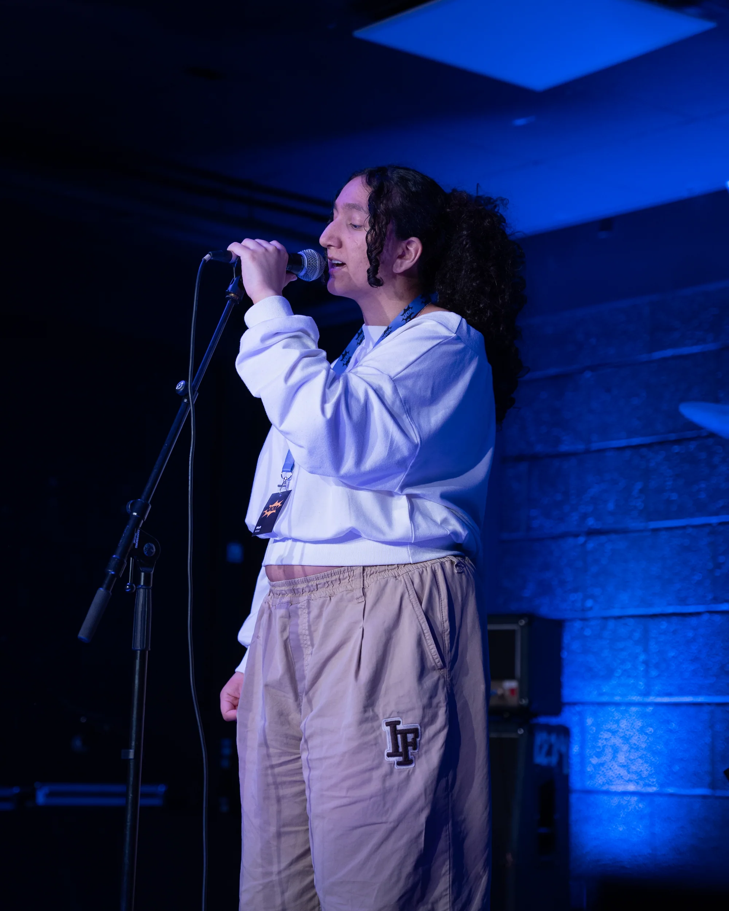
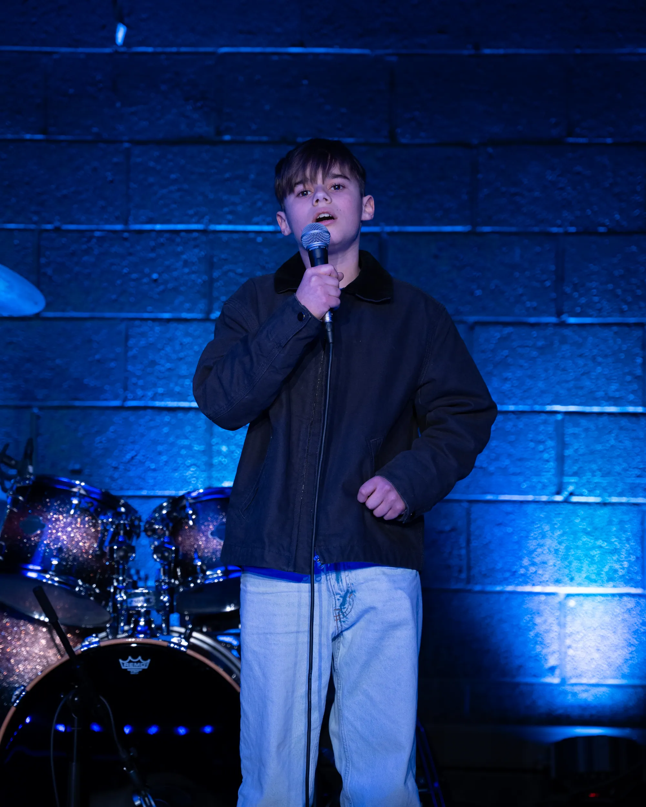
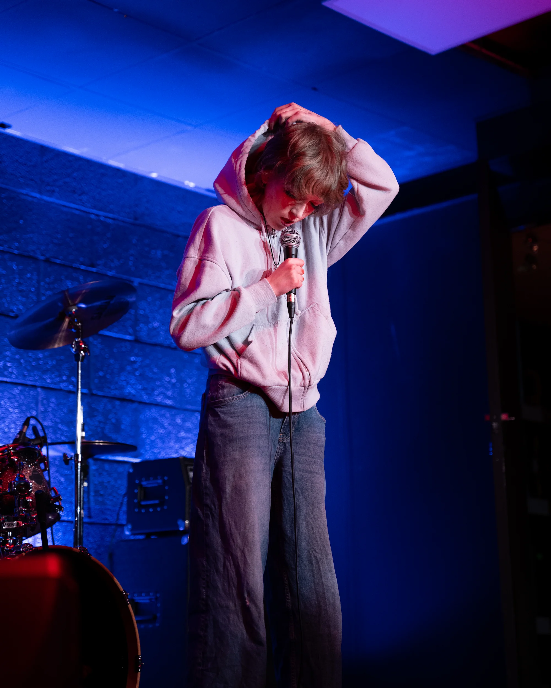
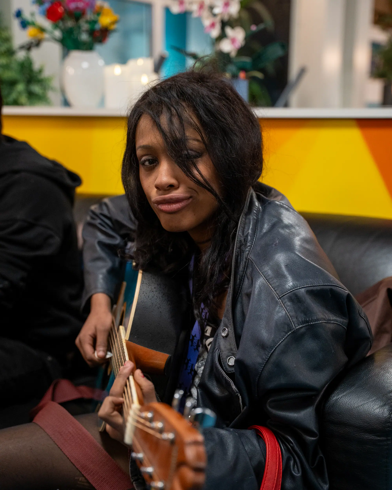
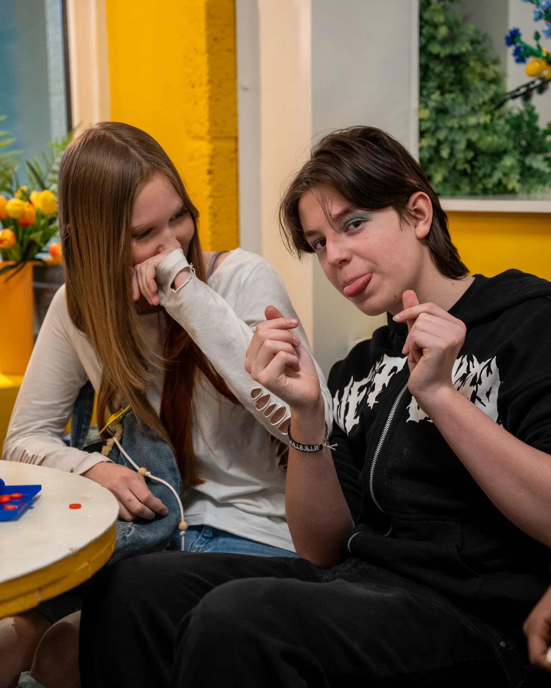
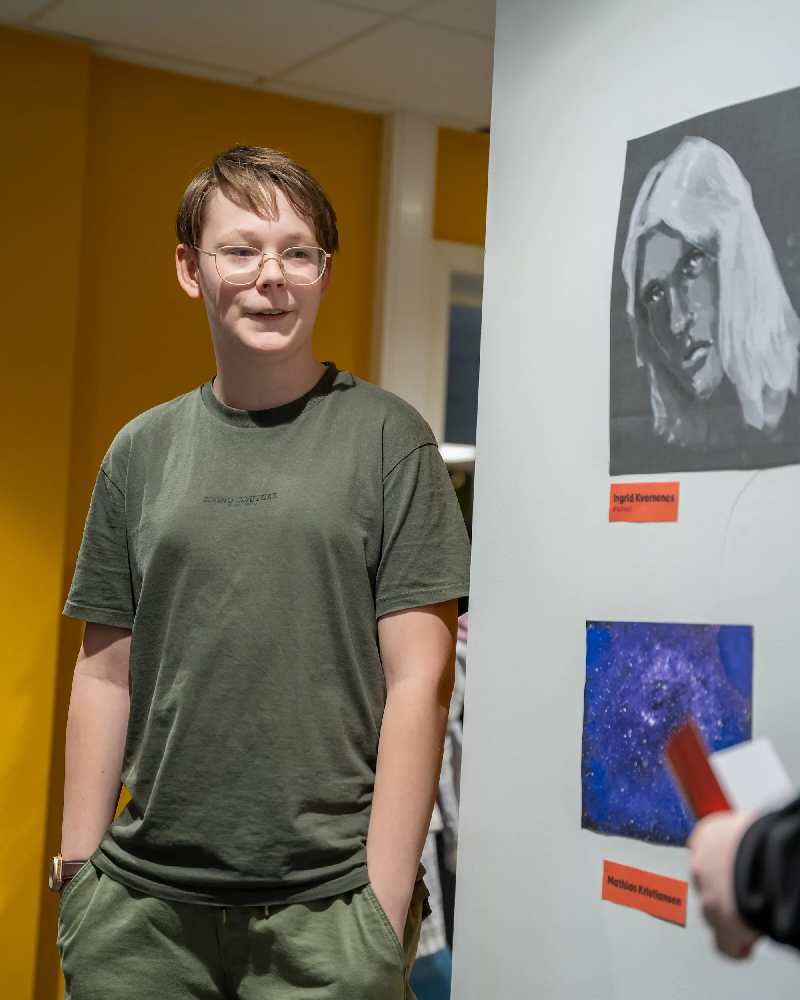
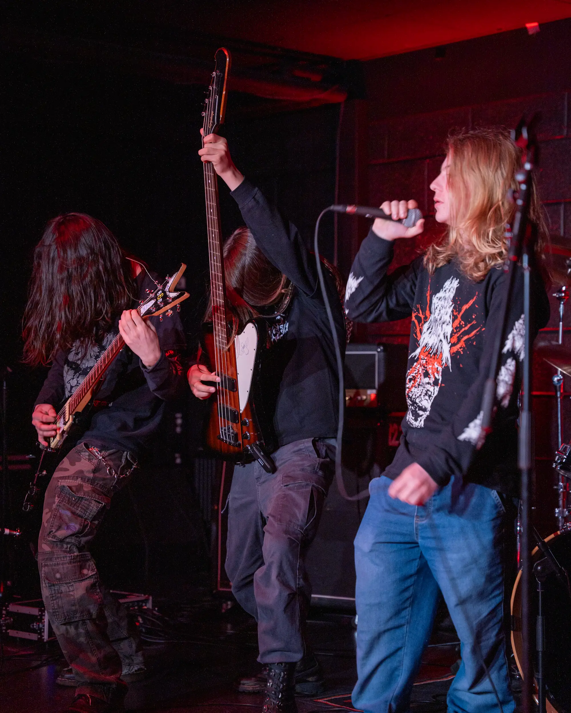
Plakater
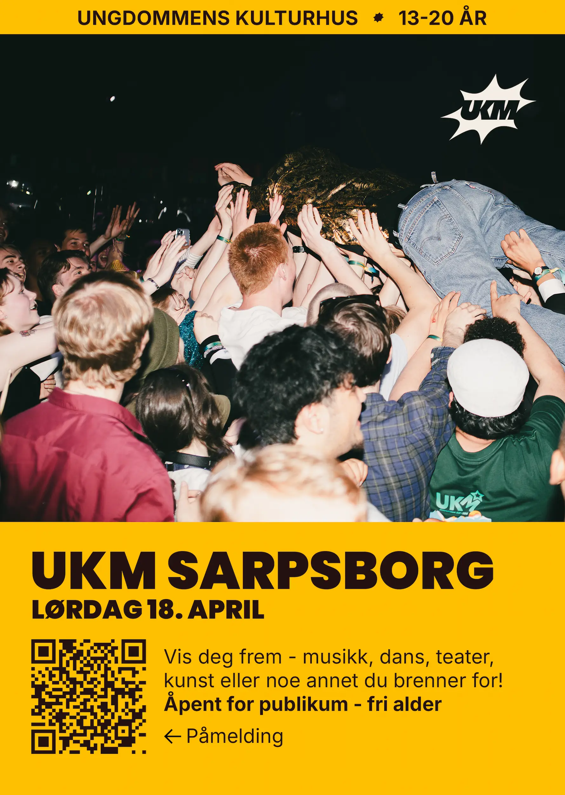
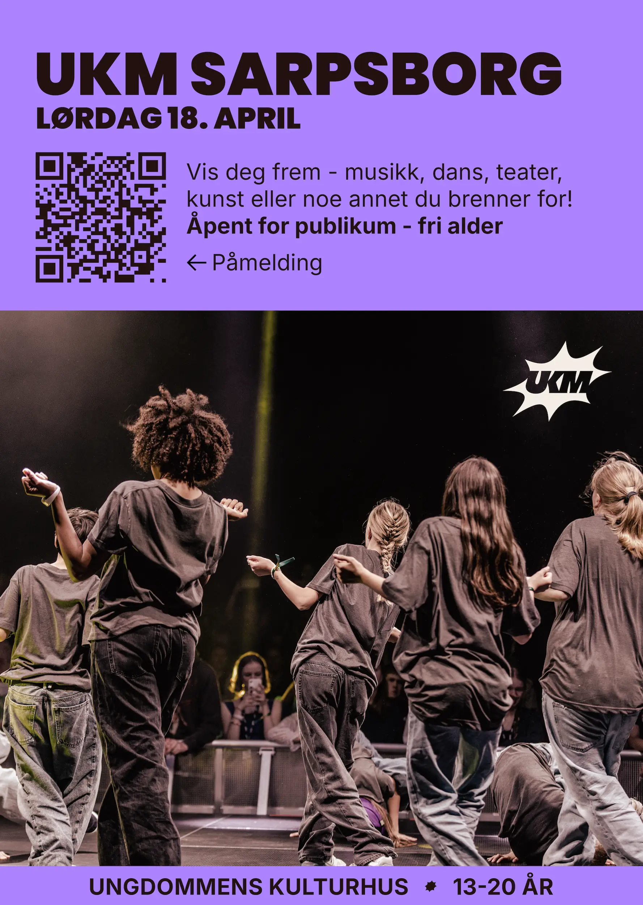
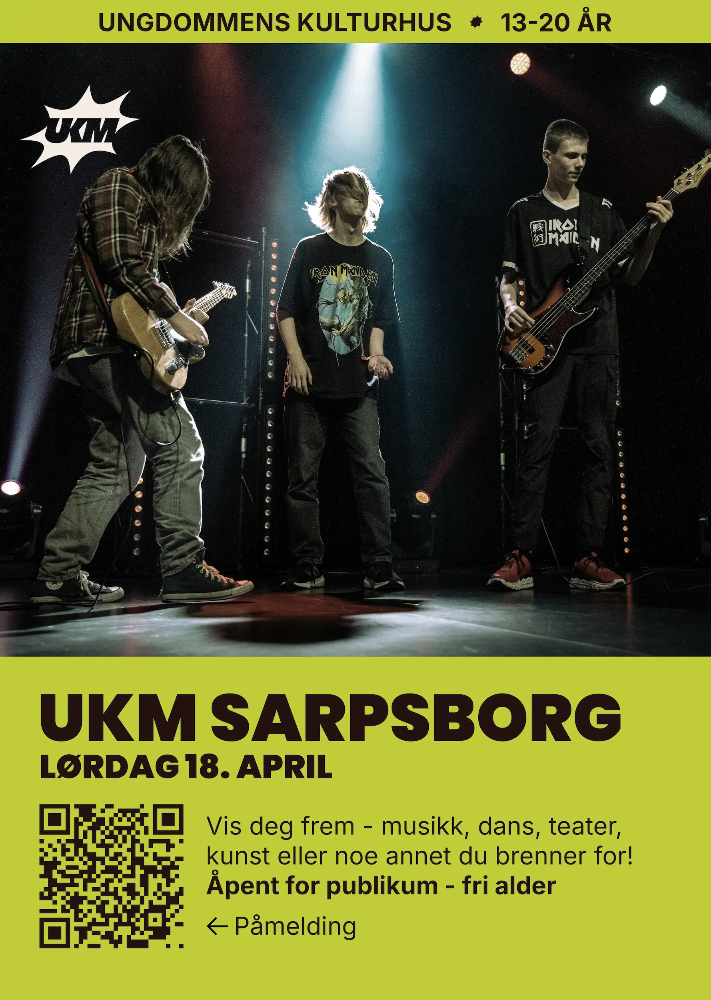
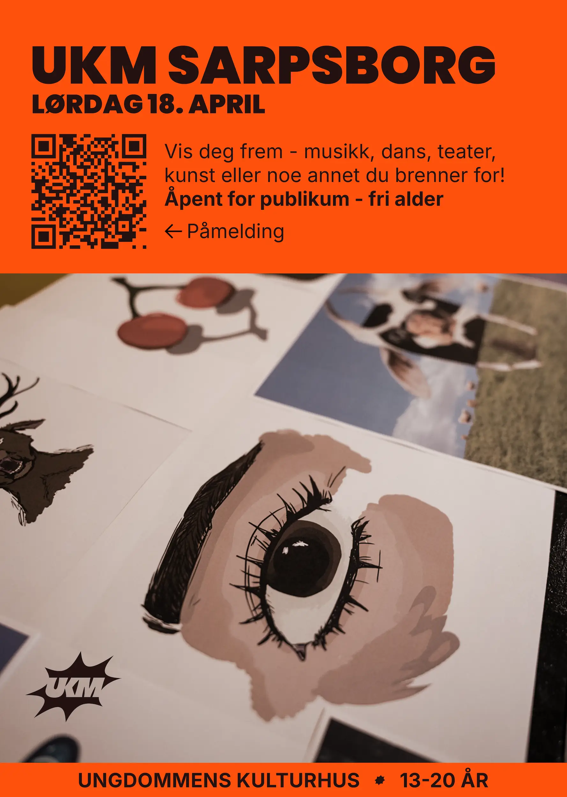
Reels
Hei!
Er du interessert i å jobbe med meg, eller har du noen spørsmål? Send meg gjerne en melding! Jeg svarer innen noen dager.